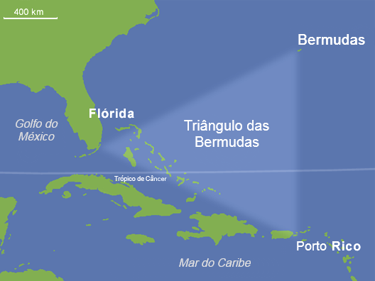
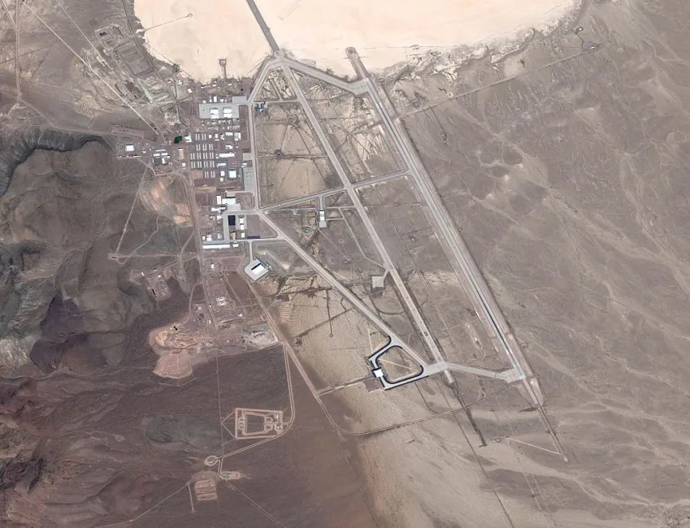
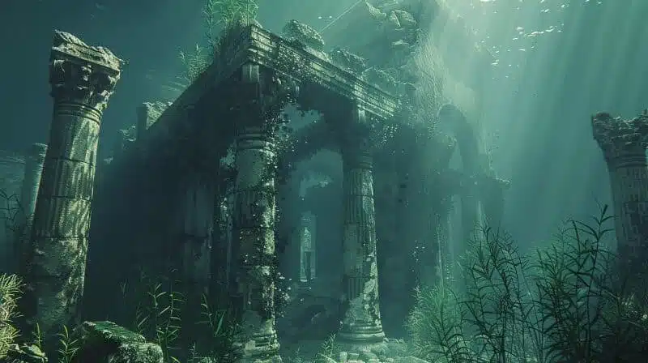

Triângulo das Bermudas
Uma região do oceano conhecida pelo desaparecimento misterioso de navios e aviões ao longo das décadas, cercada por teorias e especulações.
Ler MaisO mundo está repleto de acontecimentos sem explicação. Civilizações desaparecidas, sinais misteriosos, criaturas desconhecidas e fenômenos que continuam intrigando cientistas e curiosos até hoje.

Uma região do oceano conhecida pelo desaparecimento misterioso de navios e aviões ao longo das décadas, cercada por teorias e especulações.
Ler MaisUm misterioso sinal de rádio captado em 1977 que até hoje não possui uma explicação definitiva, levantando teorias sobre vida extraterrestre.
Ler MaisUm livro escrito em um idioma indecifrável, acompanhado de ilustrações estranhas e sem explicação clara sobre sua origem.
Ler Mais
Uma base militar dos Estados Unidos cercada por teorias envolvendo tecnologia secreta, experimentos militares e possíveis contatos extraterrestres.
Ler Mais
A lendária civilização perdida descrita por Platão continua sendo alvo de debates e teorias sobre sua possível existência e desaparecimento.
Ler MaisO oceano cobre mais de 70% da Terra, mas grande parte dele ainda permanece inexplorada, alimentando teorias sobre criaturas e estruturas desconhecidas.